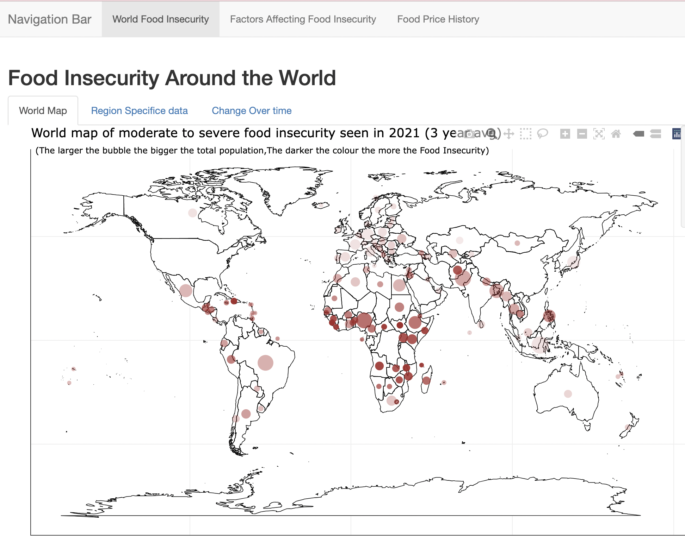

Storytelling with Open Data
In this project I created an R-based shinyApp data visualisation application. The topic I chose was World Food Insecurity.
I conveyed a compelling story about how the different countries of the world faced severe world food insecurity. I then dove deeper
and focused on region specific data and historical data. I focuse don definind the doof insecurity problem, factors contributing to food insecurity and
the historical fluctuations in food prices that led to starvation.

The data was sourced from FAO United Nations and World Bank stats data website.
Go to Project!